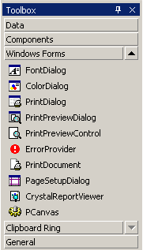
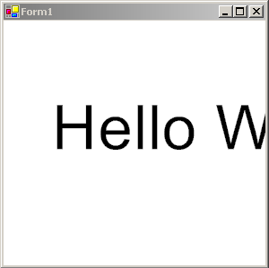

|
Piccolo.NET: Out of the Box
This tutorial will help you figure out where to begin. It will guide you
from downloading Piccolo to writing and compiling your first zoomable user
interface.
1. Get
the Pre-Requisites
In order to write your first Piccolo.NET application, you will need to make
sure that you have the following:
-
Visual Studio .NET
-
- This tutorial assumes that you are using Visual Studio .NET as your
development environment. Visual Studio is not required to write
Piccolo.NET applications, but we do recommend using it. If you do not
already have Visual Studio, you can purchase it from Microsoft.
-
The .NET Framework
-
- To run any Piccolo.NET code, you must have the .NET Framework (version
1.1) installed on your machine. The .NET Framework SDK comes with
Visual Studio. If you do not have Visual Studio, you can download the
.NET SDK directly.
-
Piccolo.NET DLLs - Of course, you will need Piccolo.NET. You can
download the DLLs or the full source code from the download page.
-
-
Piccolo.NET Documentation - Optionally, you may want to download
Piccolo.NET's integrated help.
This will enable context sensitive help within the development environment.
Setting up
the Environment
These steps will help you setup the Visual Studio environment to improve the
Piccolo.NET development experience.
2.
Install the Documentation
It will guide you through installing the Piccolo.NET API documentation
directly into Visual Studio and will enable context sensitive help within the
development environment. If you do not want to install Piccolo.NET's
integrated help, you can skip to step
3.
-
Make sure Visual Studio is closed.
-
Locate the file "Piccolo-Help-1.0.zip," which you downloaded in step 1.
Extract the zipped package using WinZip or another compression utility.
-
Open the folder where you extracted the file and double click on the "Piccolo
Help Setup.msi" file.
-
Follow the on-screen directions of the setup program.
-
Open Visual Studio and click on the "Contents" option of the "Help" menu, to
display contents. You will probably receive a message that "help is
updating to reflect your recent changes." It can take several minutes to
add all of the Piccolo.NET documentation to Visual Studio. There should
be an entry in the help contents called "Piccolo.NET." You can now browse
the documentation through the contents or search it using the Index. You
can also use context sensitive help. For example, if you move the cursor
over the name of a Piccolo type, such as PNode, and press
F1, you
will get the documentation for that type.
3. Add
PCanvas to the Toolbox
All Piccolo interfaces need to be placed in the piccolo canvas,
PCanvas, so that they may be viewed and interacted with by the user.
This step will show you how to add the PCanvas to the Visual Studio
Toolbox. This will enable you to drag the canvas directly to a form using
the Visual Designer, rather than adding the canvas programmatically.

-
Open Visual Studio, if it is not already open
-
Make sure the Toolbox is showing. If it is not, click on the "View" drop
down menu and select the item named "Toolbox".
-
If you do not see a "Windows Forms" button on the Toolbox, right click on the
Toolbox and select "Show All Tabs".
-
Press the "Windows Forms" button to show the windows forms tools.
-
Right click anywhere on the Toolbox and select "Add/Remove Items..." from the
popup menu.
-
When the "Customize Toolbox" window pops up, click on the "Browse"
button.
-
Look in the folder where you downloaded the Piccolo Source or Binaries.
If you downloaded the source code, select the
"/Piccolo.NET/Bin/UMD.HCIL.Piccolo.dll". If you downloaded the compiled
source, select "/Bin/UMD.HCIL.Piccolo.dll". Press the "Open"
button.
-
Press the "OK" button in the "Customize Toolbox" window.
-
You should now see PCanvas at the bottom of the windows forms tools. You
may have to scroll down with the down arrow to find it.
Building Your First
ZUI
These steps will guide you through writing your first zoomable user interface
with Piccolo.NET.
4.
Create a new C# Windows Application Project
Here you will create a new Windows project.
-
Open Visual Studio, if it is not already open.
-
Select "New" from the "File" menu and choose "Project" from the popup menu.
-
Select File New ProjectCreate a new C# project
-
Click the "Visual C# Projects" folder in the "Project Types" window of the
dialog box and choose "Windows Application" in the "Templates" window.
-
Enter a name and location for the project and click the "OK" button.
5. Add References to
Piccolo DLLs
These steps will add references to the Piccolo libraries so that you can
access the namespaces.
-
Right click on the References folder in the Solution Explorer and click "Add
Reference."
-
Click Browse
-
Look in the folder where you downloaded the Piccolo Source or Binaries.
Look in the /Bin directory. Select both "UMD.HCIL.Piccolo.dll" and
UMD.HCIL.PiccoloX.dll" and click "Open".
-
Click "OK" to add the references.
6. Add the
Canvas
Next we will add the PCanvas the form in the designer.
-
Drag the PCanvas from the Toolbox to the Form in the Visual Designer.
-
In the Properties Window, click on the "Name" field and type "canvas."
-
Drag the handles on the Canvas to resize it to cover the entire Form
-
Click on the "Anchor" field in the Properties window, and click the down arrow
to the right. When the little box pops up, select the rectangles to the
right and bottom of the middle square. This will make the canvas grow
when the window is resized.
NOTE: As a shortcut, we could have just extended PForm, a
utility class in the UMD.HCIL.PiccoloX namespace that automatically adds a
PCanvas to a form and resizes the canvas when the form is resized. See the
tutorials that follow this one for an example of how to do that.
7. Write the
Code
Now we will write our first Piccolo code.
-
If the Designer is showing, press F7 to enter the code view.
-
At the top of the screen, under the using statements, add the following:
using UMD.HCIL.Piccolo;
using UMD.HCIL.Piccolo.Nodes;
These lines reference the main Piccolo namespace and the Nodes namespace, which contains the
PText node that we will use below.
-
In the Constructor after the call to InitializeComponent(), add the following
code:
PText text = new PText("Hello World");
canvas.Layer.AddChild(text);
That's it! You've just written your first zooming application. The first line creates a
new PText node and initializes it to the string "Hello World". And, the second line adds the new
node to the main layer of the canvas. Zooming and panning are there for free.
8. Run the Code
Now let's see Piccolo in Action
-
Press F5 to run the project
-
You should see the text "Hello World"
-
Click anywhere in the window with the left mouse button and drag to pan the
camera around.
-
Click anywhere in the window with the right mouse button and drag to the right
to zoom in on the point. Drag to the left to zoom out.

The reason this works is because the zoom and pan event handlers are installed by
default. See the Defining
User Interaction tutorial for more details.
|